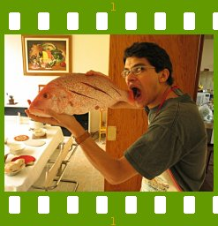

People of openSUSE: Federico Mena-Quintero

Federico Mena-Quintero, the last member of the first openSUSE Board being interviewed on the ‘People of openSUSE’, is a full time GNOME ‘bug-fixing’ hacker, and one of the founders of the GNOME Project.
- Nickname: Just “Federico”, although you’ll see me on #opensuse-gnome as “federico1” due to Freenode’s retarded registration policies :)
- Homepage: http://www.gnome.org/~federico
- Blog: http://www.gnome.org/~federico/news.html
- Favorite season: Uh, probably spring. Seasons are not really well defined when you live inside the tropics.
- Motto: When in doubt, use brute force.
Please introduce yourself!
Age: 31.
Place of birth: Mexico City.
Location: Xalapa, Veracruz, Mexico.
Occupation: GNOME Hacker.
Family status: happily married, expecting a baby.
Tell us about the background to your computer use.
The first computer I used was an Atari, when I was about 7 years old. My school had some sort of partnership with a science magazine for kids, and at that time they were giving LOGO lessons for children. I was very fortunate to be able to attend.
The second computer I used was a Commodore 16 / Commodore 64, which they sold in supermarkets here in Mexico. My parents couldn’t afford one, so I picked up any number of “teach yourself BASIC” books and wrote my first programs on the demo computers in the supermarket while my parents did the shopping. Unbeknownst to me, I un-learned all the nice structured programing that I had learned with LOGO. The supermarket held a contest once; the Mexico City Zoo had gotten a new giraffe, and you could submit your ideas for names for the giraffe. The winning entry would get a C64 (or was it a C16?). My carefully-picked name of “Spots” didn’t win, and I was heartbroken.
Later, my dad’s office acquired a PDP-11, and they had a BASIC interpreter for it. I found it strange that that huge machine wasn’t as nice to program as the small computers in the supermarket.
My uncle had a TRS-80, and he passed it on to me when he acquired his first IBM PC. Again, the TRS-80 wasn’t as nice as the computers in the supermarket (no color!), but at least I now had a computer of my own. I could never get the tape drive to work. Re-typing my programs each time got pretty tedious.
Eventually my mom got her own PC, which I immediately monopolized. As a teenager I learned Turbo Pascal quite well, and was always trying to write a GUI toolkit. Eventually I got interested in computer graphics proper, and decided to learn C, as all the interesting code in magazines was in C; I started using Turbo C.
Doing computer graphics in C on a 16-bit compiler was pretty painful. Eventually a friend suggested DJGPP, a DOS port of the 32-bit GNU C compiler. It was a wonderful thing! I could finally allocate more than 64 KB of memory at a time. That’s when I started learning about the GNU project and the philosophy of free software.
I met Miguel de Icaza on the first day of college; he and other friends were putting a joke on the new students in the classroom next door. He showed me Linux and eventually convinced me to install it at home. I had been wanting to learn Unix, anyway, since that’s what my school used. So I borrowed a tiny hard disk from my uncle (the same kind uncle who gave me his TRS-80), installed Slackware, and started playing.
For some time I had been wanting to write a Photoshop killer, as I had already written some filters to manipulate images. Miguel wisely told me that I had no idea of how to structure such a big project. One day he pointed me to an announcement for the GIMP. I downloaded it and ported my image filters to it; then I sent them to the authors. They told me that they loved the new filters, and asked if I could please write some more. That is when I got completely hooked: having someone appreciate your code, when they are much better programmers than yourself, is a fantastic feeling. So I started writing plug-ins like crazy, and helping people who wanted to write their own.
Eventually I took over the maintainership of the GIMP when the main authors graduated and lost all their free time to work on the program.
Then Miguel, Elliot Lee, and myself started GNOME in 1997, and the rest is history :)
When and why did you start using openSUSE/SUSE Linux?
As soon as Novell acquired Ximian, actually. I had been carefully avoiding SUSE Linux until then, since I had gotten pretty comfortable with Red Hat Linux. Working for 1.5 years at Red Hat probably explains that :)
I’ve been getting to like SUSE Linux / openSUSE since then; it has been slowly shedding its old skin of a super-featureful, complicated distribution. I like the new emphasis on usability and things that just work.
When did you join the openSUSE community and what made you do that?
As soon as openSUSE got formed, I guess. I had been working on the team that developed SLED 10, so the transition to openSUSE was pretty natural.
In what way do you participate in the openSUSE project?
I work in GNOME-related tasks: bug fixing for Nautilus, GTK+, and other low-level parts of the GNOME platform; occasional new development; coordination with upstream projects, etc.
I’m also a member of the newly-formed openSUSE Board.
What especially motivates you to participate in the openSUSE project?
openSUSE has many nice technical aspects, which have historically been overlooked due to their complexity. I think I can help make it really shine through a very polished GNOME desktop.
It’s also nice to be in a place where you get to talk to the free software community and real-world users (the mythical “customers”). That way you get a better vision of the problems that must be solved.
What do you think was your most important contribution to the openSUSE project/community or what is the contribution that you’re most proud of?
I’m rather proud of the performance enhancements that I’ve done or helped coordinate for GNOME, which have often appeared first in openSUSE: http://www.gnome.org/~federico/index.html#performance-articles
Also, Rodrigo Moya and I came up with a pretty nice policy for bug triaging in openSUSE: http://en.opensuse.org/GNOME/Bugs
When do you usually spend time on the openSUSE project?
All my work time :)
Three words to describe openSUSE? Or make up a proper slogan!
Not three words, but “a distro worth hacking on”.
What do you think is missing or underrated in the distribution or the project?
Missing: software updates that Just Work All The Time.
Underrated: YaST’s tens of modules and all the custom work we put in our packages. YaST would definitely be helped by a better user interface.
What do you think the future holds for the openSUSE project?
I think we’ll see a lot more involvement from the community, but we’ll have to do a lot of work to get that. SUSE is an old distro, with a large user-base, that was rather closed for some time. Now we have to find a way to get everyone involved in the new open distro.
I’m sure we’ll keep seeing interesting development projects inside openSUSE, like the Build Service, the Hack Week, and the many little things we have done in GNOME and KDE.
A person asks you why he/she should choose openSUSE instead of other distribution/OS. What would be your arguments to convince him/her to pick up openSUSE?
Large user base for community support.
Commercial support if you need it.
openSUSE has people who Know What They Are Doing at the low levels of the distribution.
Which members of the openSUSE community have you met in person?
Oh, there are too many of them. All of the GNOME team, some of the core distro team from Germany and the Czech republic, and random people from all over the world.
How many icons are currently on your desktop?
24 and I refuse to clean them up!
What is the application you can’t live without? And why?
Evolution. It solves my mail/calendar/addressbook problems, I completely trust the people who developed it, and how could I not use a program which I helped develop myself?
Which application or feature should be invented as soon as possible?
A seamless mind-organizer. It would borrow features from Evolution, outlining programs, mind-mappers, Tomboy, sketchpads…
Which is your preferred text editor? And why?
Emacs. It is the only editor which will still be in use 100 years from now.
Which famous person would you want to join the openSUSE community?
John “Maddog” Hall.
Which computer related skills would you like to have?
Web development.
The Internet crashes for a whole week. How would you feel, what would you do?
Finally, free time to work on the construction of my house!
Which is your favorite movie scene?
Oh, there are so many… probably the end of The Usual Suspects, when Verbal Kint walks away and says his line about the devil’s greatest trick.
Star Trek or Star Wars?
Shrug.
Probably Star Wars.
What is your favorite food and drink?
Whatever my wife and I cook :)
Mexican (in its many sub-cuisines – Oaxaca, Yucatán, Veracruz, central Mexico…), Indian, Chinese, Mediterranean, Japanese…
Drink — I’m not much of a drinker. Good, strong beer. White Russians.
Favorite game or console (in your childhood and nowadays)?
Childhood — “Neurosurgeon” for the Intellivision II.
Later — Batman for NES.
Later — Doom and Quake.
Nowadays — I’m happy to play Go with Hans Petter Jansson or chess with my wife.
Which city would you like to visit?
Any place in India.
More of China.
Paris.
Prague.
Rome.
What is your preferred way to spend your vacation?
With my wife, eating a lot, and taking lots of pictures in interesting places.
Someone gives you $1.000.000. What would you do with the money?
That’s US dollars?
Save half of it for when I retire :)
Use half of the rest to travel.
Use the rest to buy an empty lot and build a nice house.
If traveling through time was possible, when would we be most likely to meet you?
Somewhere in the 14th or 16th century.
There’s a thunderstorm outside. Do you turn off your computer?
Nah.
Have your ever missed an appointment because you forgot about it while sitting at your computer?
Of course, many of them.
Show us a picture of something, you have always wanted to share!
Sure, a picture of my wife and I:
http://www.gnome.org/~federico/misc/federico-oralia.jpg
{kind=link}
You couldn’t live without…
My wife. Seriously, she’s better than Evolution and Emacs combined.
Which question was the hardest to answer?
The ones where I had to pick the pictures :)
What other question would you like to answer? And what would you answer?
I can’t think of anything else right now :)